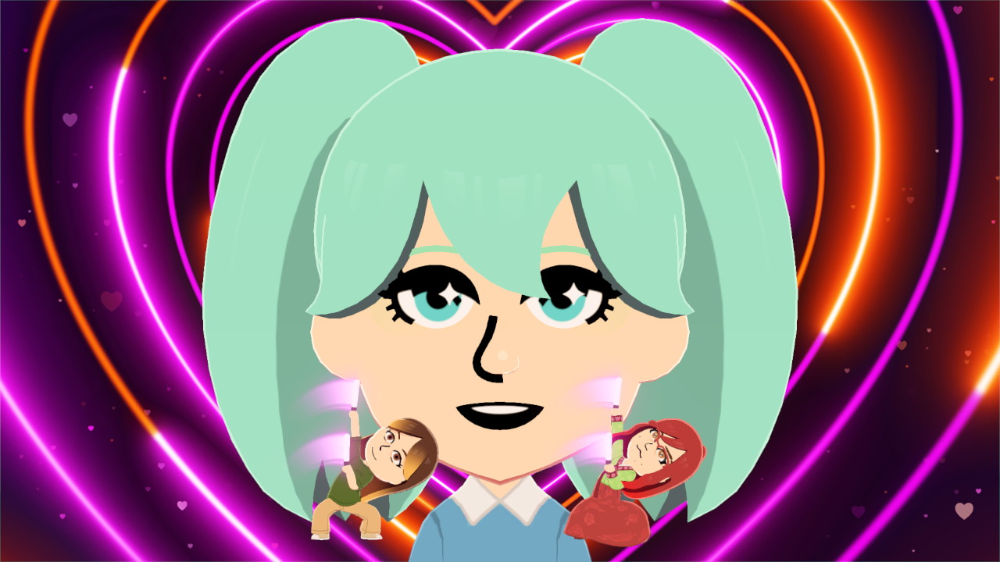
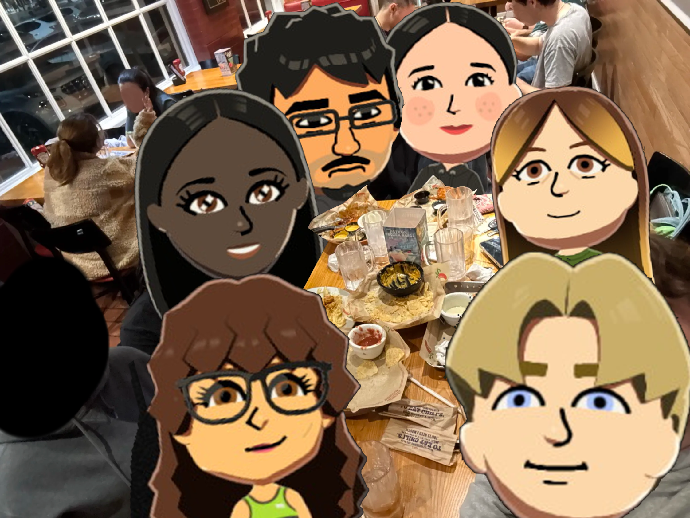
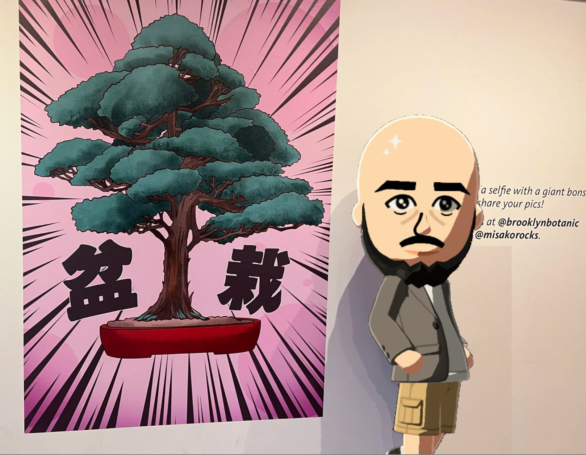

Let’s compare notes.
I’m based in Vanderbilt University, feel free to reach out for a coffee chat, zoom meeting, or anything else!
I’m an electrical engineering PhD student at Vanderbilt. Here is a little space to learn more about personality, interests, and projects! You can access my resume anytime you'd like, so this area tries to focus on a few outliers that don't fit there.
ON THE SIDE



PULL UP A BOOK
GET IN TOUCH
I’m based in Vanderbilt University, feel free to reach out for a coffee chat, zoom meeting, or anything else!